Ремарка по Свореню ("Электроника шаг за шагом"):
Усилитель на самом деле ничего не усиливает! Он создаёт копию входного сигнала, используя при этом энергию источника питания.
Резистор R1 выполняет роль нагрузки, дабы не было короткого замыкания и наш транзистор не сгорел.
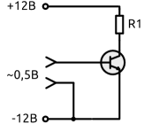
Наш транзистор npn-типа, и открывается только при положительном значении полуволны, а при отрицательном закрывается. Помимо этого транзистор, как и любой полупроводниковый прибор, имеет нелинейные характеристики в отношении напряжения и тока. Чем меньше значения тока и напряжения, тем сильней эти искажения. Мало того что от нашего сигнала осталась только полуволна, так она ещё и искажена будет.
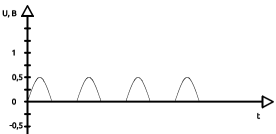
Чтобы избавиться от этих проблем, нам нужно сместить наш сигнал в рабочую зону транзистора, где поместится вся синусоида сигнала и нелинейные искажения будут незначительны. Для этого подают на базу напряжение смещения, допустим в 1 вольт, с помощью составленного из двух резисторов R2 и R3 делителя напряжения.
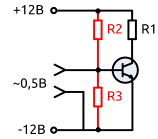
Наш сигнал, входящий в транзистор, будет выглядеть так:
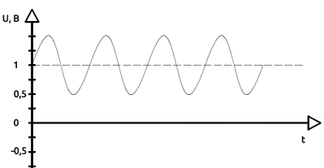
Если говорить об усилении звука (переменного напряжения), то нам нужно изъять наш полезный сигнал с коллектора транзистора. Для этого установим конденсатор C1:
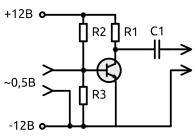
Как мы помним, конденсатор пропускает переменный ток и не пропускает постоянный, поэтому он нам будет служить фильтром, пропускающим только нашу синусоиду. А постоянная составляющая, не прошедшая через конденсатор, будет рассеиваться на резисторе R1. Переменный же ток будет стремиться пройти через конденсатор, так как сопротивление конденсатора для него ничтожно мало по сравнению с резистором R1.
Вот и получился первый транзисторный каскад нашего усилителя. Но существуют ещё два маленьких нюанса...
Мы не знаем на 100% какой сигнал входит в усилитель, вдруг всё таки источник сигнала неисправен, всякое бывает, опять же статическое электричество или вместе с полезным сигналом проходит постоянное напряжение. Это может стать причиной неправильной работы транзистора или даже его поломки. Для этого установим конденсатор С2, он подобно конденсатору С1, будет блокировать постоянный электрический ток, а так же ограниченная ёмкость конденсатора не будет пропускать пики большой амплитуды, которые могут испортить транзистор. Такие скачки напряжения обычно происходят при включении или отключении устройства.
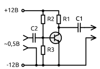
И второй нюанс - для регулировки входного сопротивления добавим в цепь эмиттера резистор R4:
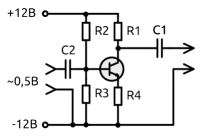
Он выполняет роль нагрузки для источника сигнала и, самое главное, создает обратную отрицательную связь по току коллектора.
Если растет ток коллектора (например, из-за увеличения температуры), увеличивается падение напряжения на R4. Это напряжение приложено (через R3) между базой и эмиттером, причем, в отрицательной полярности (минусом на базу). Рост напряжения на R4 приводит к закрытию транзистора и падению коллекторного тока. Таким образом, R4 стабилизирует режим работы транзистора.
Часто ООС нужна только по постоянному току, а по переменному она вредна — уменьшает коэффициент усиления. Тогда R4 шунтируют конденсатором (таким же, как С2). В этом случае по переменному току эмиттер замкнут на общий провод, и ООС не возникает, а по постоянному — все работает, как описано выше.
Отношение между R1 и R4 обычно принимается 1 к 10:
R1 = R4*10;
Простейший усилитель постоянного тока
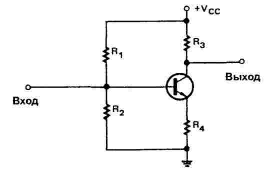
Чаще всего используется усилитель с общим эмиттером. Изображенная схема содержит цепь смещения на основе делителя напряжения и эмиттерную цепь обратной связи. В цепях этого типа не используется конденсатор связи. Входной сигнал подается прямо на базу транзистора. Выходной сигнал снимается с коллектора.
Усилитель постоянного тока может обеспечивать усиление как по току, так и по напряжению. Однако, он применяется, главным образом, в качестве усилителя напряжения. Усиление по напряжению одинаково для сигналов постоянного и переменного токов.
В большинстве случаев одного каскада усиления недостаточно. Для получения более высокого усиления требуются два или более каскадов. Соединенные вместе два или более каскадов называются многокаскадным усилителем.
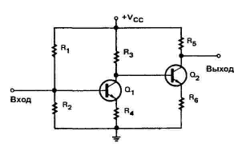
Входной сигнал усиливается первым каскадом. После этого усиленный сигнал поступает на базу транзистора второго каскада. Общее усиление цепи равно произведению коэффициентов усиления по напряжению двух каскадов. Например, если и первый, и второй каскады имеют коэффициент усиления по напряжению равный 10, то общий коэффициент усиления цепи равен 100.
Комплементарный усилитель
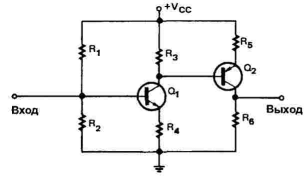
В нем используются транзисторы типов n-p-n и n-p-n. Цепь такого типа называется комплементарным усилителем. Функции этой цепи такие же, как и у цепи, двухкаскадного усилителя. Разница только в том, что транзистор второго каскада p-n-p типа, p-n-p транзистор, перевернут, так что на эмиттер и коллектор подается напряжение смещения правильно.
Схема Дарлингтона
На рисунке изображены два соединенных вместе транзистора, работающих, как одно целое. Эта цепь называется схемой Дарлингтона.
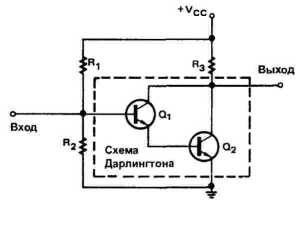
Транзистор Qt используется для управления проводимостью транзистора Qr. Входной сигнал, поданный на базу транзистора Qx, управляет током базы транзистора Q2. Схема Дарлингтона может быть изготовлена в одном корпусе с тремя выводами: эмиттер (Э), база (Б) и коллектор (К). Она используется как простой усилитель постоянного тока с высоким коэффициентом усиления по напряжению.
Основным недостатком многокаскадных усилителей является их высокая температурная нестабильность. В цепях, требующих три или четыре каскада усиления постоянного тока, оконечный каскад может не усиливать исходный сигнал постоянного или переменного тока, так как он будет сильно искажен. Та же самая проблема существует и со схемой Дарлингтона.
В случаях, когда требуется и высокий коэффициент усиления, и высокая температурная стабильность, необходим усилитель другого типа. Это — дифференциальный усилитель:
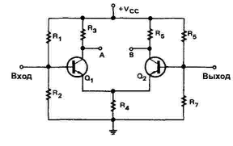
Его особенность в том, что он имеет два отдельных входа и может обеспечить либо один, либо два выходных сигнала. Если сигнал подан на вход транзистора Q1, усиленный сигнал появится между выходом А и землей, как в обычном усилителе. Однако малый сигнал появится также на резисторе R4 и на эмиттере транзистора Q2. Транзистор Q2 работает, как усилитель с общей базой. Усиленный выходной сигнал появится между выходом В и землей. Выходной сигнал с выхода В сдвинут по фазе на 180 градусов по отношению к сигналу на выходе А. Это делает дифференциальный усилитель более универсальным, чем обычный.
Обычно дифференциальный усилитель не используется для получения выходного напряжения между одним из выходов и землей. Выходной сигнал получают между выходом А и выходом В. Поскольку два выходных сигнала сдвинуты относительно друг друга на 180 градусов по фазе, то между этими точками существует значительное выходное напряжение. Входной сигнал может быть подан на любой вход.
Дифференциальный усилитель обладает высокой температурной стабильностью, так как транзисторы Q1 и Q2 расположены близко друг к другу и испытывают одинаковое влияние температуры. Кроме того, коллекторные токи транзисторов Q1 и Q2 испытывают одинаковые тенденции к увеличению и уменьшению, так что выходное напряжение остается постоянным.
Дифференциальный усилитель широко используется в интегральных микросхемах и в электронном оборудовании. Он используется для усиления и(или) сравнения амплитуд сигналов как постоянного, так и переменного токов. Дифференциальные усилители можно соединять последовательно для получения более высокого усиления. В некоторых случаях дифференциальный усилитель используется в качестве первого каскада в многокаскадных обычных усилителях. Дифференциальные усилители, благодаря их универсальности и температурной стабильности, являются наиболее важным типом усилителей с гальванической связью.